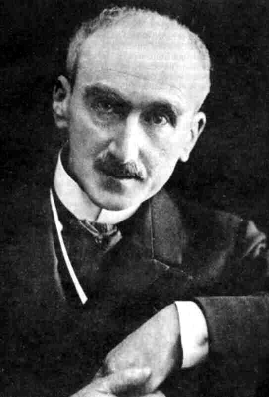
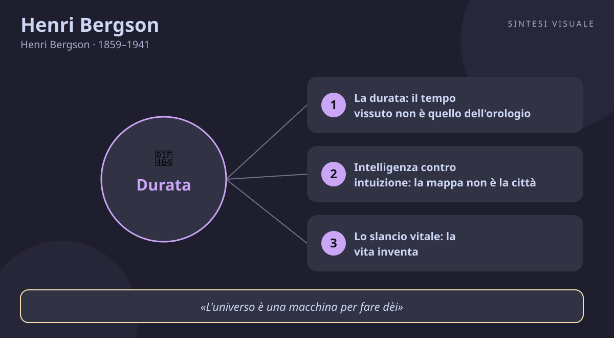

Home / Filosofi / Henri Bergson

Henri Bergson
Henri Bergson · 1859–1941
«Esistere è cambiare, cambiare è maturare, maturare è continuare a creare se stessi senza fine»
- Slancio vitale
- Intuizione
- Memoria
- Evoluzione creatrice
💬La massima
«Esistere è cambiare, cambiare è maturare, maturare è continuare a creare se stessi senza fine.»
— Henri Bergson, L'evoluzione creatrice (L'Évolution créatrice), capitolo I, 1907 (in francese: «Exister, c'est changer, changer, c'est mûrir, mûrir, c'est se créer indéfiniment soi-même»)
Questa frase è il cuore pulsante di tutta la filosofia di Bergson. Contro l'idea che ognuno di noi «sia fatto così» — carattere fisso, destino scritto, personalità immodificabile — Bergson sostiene che l'io non è una cosa ma un processo: in ogni istante diventiamo qualcuno di leggermente diverso, e la nostra storia passata non scompare ma si accumula dentro di noi, come le note di una melodia che danno senso a quelle che verranno.
Pensate alla differenza tra una fotografia e un film: la fotografia fissa un istante morto, il film vive solo scorrendo. Chi si descrive dicendo «io sono ansioso», «io non sono portato per le lingue», «ormai sono troppo vecchio per cambiare» sta scambiando una fotografia per il film: sta trattando sé stesso come un oggetto finito, mentre è un'opera sempre in corso. Maturare, per Bergson, non significa indurirsi ma arricchirsi: ogni esperienza vissuta davvero ci aggiunge qualcosa, e nessuno è mai «arrivato» una volta per tutte.
La parte più liberante della massima è l'ultima: «creare se stessi senza fine». Non si tratta di migliorarsi a colpi di buoni propositi, ma di riconoscere che la libertà è la nostra condizione naturale: il futuro non è già scritto né interamente prevedibile, e proprio per questo ogni scelta conta. Esistere, in fondo, è un verbo attivo.
👤Biografia
Henri Bergson nasce a Parigi il 18 ottobre 1859, da padre musicista ebreo di origine polacca e madre inglese. È un allievo prodigioso: al liceo Condorcet eccelle tanto in matematica quanto in lettere, entra all'École Normale Supérieure nel 1878 e nel 1881 supera l'abilitazione all'insegnamento della filosofia. Seguono anni di gavetta nei licei di provincia — Angers, Clermont-Ferrand — dove il giovane professore, timido e di salute delicata, prepara in silenzio la sua rivoluzione filosofica.
Nel 1889 pubblica la tesi di dottorato, il Saggio sui dati immediati della coscienza, e nel 1900 ottiene la cattedra al Collège de France: le sue lezioni diventano l'evento mondano di Parigi, con la sala gremita di studenti, dame dell'alta società e curiosi. Nel 1892 ha sposato Louise Neuburger, da cui ha una figlia, Jeanne. Nel 1914 entra all'Académie française; durante la prima guerra mondiale svolge missioni diplomatiche negli Stati Uniti; nel 1927 vince il premio Nobel per la letteratura; presiede la commissione per la cooperazione intellettuale della Società delle Nazioni, antenata dell'UNESCO.
Gli ultimi anni sono segnati da una dolorosa malattia reumatica che lo costringe quasi all'immobilità, ma non gli toglie la lucidità. Nel testamento del 1937 confessa la vicinanza al cattolicesimo, ma dichiara di voler restare ebreo per solidarietà con i perseguitati, in un'Europa avvelenata dall'antisemitismo. Muore a Parigi il 4 gennaio 1941, in piena occupazione tedesca, per una bronchite: pochi giorni prima, pur potendo chiedere un'esenzione, aveva voluto mettersi in fila come tutti gli altri ebrei per la registrazione imposta dal regime di Vichy.
📌Sintesi del pensiero
Per Bergson la realtà è slancio e divenire, non un insieme di cose ferme da misurare: il tempo vero è la «durata», il flusso indivisibile che ciascuno sente dentro di sé, e la vita è uno sforzo creatore — lo «slancio vitale» — che inventa forme sempre nuove. L'intelligenza, utilissima per la tecnica, ritaglia il reale in pezzi fissi e ne perde l'essenziale; solo l'intuizione, una simpatia partecipe con le cose, coglie il movimento della vita. Conoscere è allora meno possedere e più accompagnare: capire una persona, un'opera o un'epoca significa entrarci dentro con pazienza, invece di spiegarli dal di fuori.
🏛️I temi fondamentali
- La durata: il tempo vissuto non è quello dell'orologio. L'orologio divide il tempo in istanti identici e intercambiabili, ma la vita non funziona così: un'ora d'attesa dal dentista e un'ora con la persona amata non hanno la stessa «lunghezza» interiore, e il passato non è cancellato ma continua a colorare il presente. Esempio concreto: preparare un esame solo «contando le ore sui libri» è l'illusione del tempo spazializzato; ciò che conta è la maturazione — rileggere, dormire, ripensare — perché la comprensione cresce come un frutto, non come sabbia in una clessidra.
- Intelligenza contro intuizione: la mappa non è la città. L'intelligenza è uno strumento pratico meraviglioso: scompone, classifica, misura — come una mappa che ci fa orientare. Ma chi scambia la mappa per la città perde l'essenziale: per conoscere davvero un quartiere bisogna camminarci dentro, perdersi, annusarne l'aria. Esempio concreto: un bravo medico non è solo quello che applica il protocollo, ma quello che «sente» il paziente — mette insieme sguardi, esitazioni, storia personale — e spesso capisce prima degli esami dove sta il problema: quella è intuizione, simpatia con il vivente.
- Lo slancio vitale: la vita inventa, non esegue. Contro chi spiega tutto con la meccanica — siamo macchine programmate dai geni o dall'ambiente — e contro chi vede ovunque un disegno già scritto, Bergson afferma che l'evoluzione è creazione autentica: la vita improvvisa, tenta, sbaglia, trova strade imprevedibili, come un artista davanti alla tela e non come un operaio davanti a un progetto. Esempio concreto: nessuna azienda di successo è nata eseguendo un business plan alla lettera — ogni impresa viva devia, scopre clienti inattesi, reinventa il prodotto strada facendo: quello scarto tra piano ed esito è lo slancio vitale al lavoro.
- Memoria e cervello: ricordiamo con tutto il passato, agiamo con il cervello. Il cervello, per Bergson, non è un magazzino di ricordi ma un centralino per l'azione: seleziona dal nostro immenso passato solo ciò che serve al presente. Per questo sappiamo andare in bicicletta senza ricordare quando l'abbiamo imparato — la memoria-abitudine — mentre un profumo d'infanzia può travolgerci all'improvviso — la memoria pura, che conserva tutto. Esempio concreto: durante un colloquio di lavoro le risposte fluenti vengono dall'allenamento, ma l'aneddoto vero che convince il selezionatore emerge da solo, pescato dal fondo della vostra storia: siete molto più di ciò che il curriculum riesce a contenere.
- Società chiusa e società aperta: il riso e la morale. Nel Riso Bergson mostra che ridiamo quando una persona si comporta come una cosa rigida — inciampa, si ripete, è distratta — perché il gruppo corregge così chi perde elasticità vitale. Nelle Due fonti allarga l'idea: esistono società «chiuse», unite da obbedienza e paura del diverso, e spinte «aperte» — profeti, santi, eroi — che abbracciano l'umanità intera. Esempio concreto: un team dove chi sbaglia viene deriso e zittito è una società chiusa che si irrigidisce; un team dove l'errore fa ridere tutti e si riparte è una società aperta, e guarda caso è anche quello che innova di più.
📚Le opere principali
- Saggio sui dati immediati della coscienza (Essai sur les données immédiates de la conscience, 1889). La tesi di dottorato che lancia la fama di Bergson: contro il tentativo di misurare la vita interiore come si misurano gli oggetti, riscopre la durata — intensità, qualità, libertà — come dimensione propria della coscienza. Tesi centrale: gli stati d'animo non sono grandezze ma progressi, e l'atto libero è quello che sgorga dall'intera personalità. Conta perché fonda tutta la filosofia del Novecento centrata sull'esperienza vissuta.
- Materia e memoria (Matière et mémoire, 1896). Il grande libro sul rapporto tra corpo e spirito: il cervello orienta l'azione nel presente, mentre la memoria conserva integralmente il passato e lo riversa nel presente. Tesi centrale: ricordare non è consultare un archivio cerebrale ma far rivivere il passato dentro il presente. Conta perché anticipa di un secolo i dibattiti su mente, cervello e intelligenza artificiale.
- L'evoluzione creatrice (L'Évolution créatrice, 1907). Il capolavoro che lo rende celebre in tutto il mondo: né meccanicismo né finalismo riescono a spiegare la vita, che è slancio inventivo imprevedibile. Tesi centrale: l'evoluzione è creazione continua, e l'uomo — con intelligenza e intuizione insieme — ne è la punta più avanzata. Conta perché offre un'alternativa sia al riduzionismo scientista sia al creazionismo, e ispira biologia, psicologia ed ecologia.
- Le due fonti della morale e della religione (Les Deux Sources de la morale et de la religion, 1932). Il testamento filosofico: morale dell'obbedienza contro morale dell'amore, religione statica contro religione dinamica dei mistici. Tesi centrale: santi e profeti testimoniano uno slancio d'amore che supera ogni gruppo chiuso e punta all'umanità intera. Conta perché rilegge politica, religione e guerra con categorie ancora attualissime — dal nazionalismo alla solidarietà universale.
💬Massime celebri
«L'universo è una macchina per fare dèi» — Le due fonti della morale e della religione (1932; in francese: «L'univers est une machine à faire des dieux»). Conta perché condensa in una riga l'intera metafisica di Bergson: il cosmo non è un orologio ma un cantiere dove la vita cerca di superarsi, fino alla libertà creatrice.
«L'intelligenza è caratterizzata da una naturale incomprensione della vita» — L'evoluzione creatrice (1907; in francese: «L'intelligence est caractérisée par une incompréhension naturelle de la vie»). Conta perché smaschera il limite della mentalità puramente tecnica: scomporre un essere vivente lo uccide, e per capirlo bisogna seguirlo mentre vive.
«Il riso deve rispondere a certe esigenze della vita in comune; deve avere un significato sociale» — Il riso (1900; in francese: «Le rire doit répondre à certaines exigences de la vie en commun. Le rire doit avoir une signification sociale»). Conta perché rivela il lato nascosto del divertimento: quando ridiamo insieme, stiamo difendendo l'elasticità del gruppo contro la rigidità dei singoli.
⌛Contesto storico
Bergson nasce nella Parigi del Secondo Impero, l'anno dopo la pubblicazione dell'Origine delle specie di Darwin, e cresce nella Terza Repubblica nata dalla sconfitta contro la Prussia del 1870 e dalla Comune del 1871. È la Belle Époque: la Torre Eiffel del 1889, il metrò, il cinema dei fratelli Lumière, i grandi magazzini, l'elettricità che illumina i boulevard — un'epoca ubriaca di progresso tecnico e fiduciosa che la scienza spiegherà tutto, dall'atomo all'anima.
Ma sotto la superficie la Francia è spaccata: l'affare Dreyfus (1894-1906) divide il paese tra innocentisti e colpevolisti, tra destra nazionalista e cattolica e sinistra repubblicana, e Bergson — ebreo, discreto, alieno dagli schieramenti — osserva da vicino il veleno dell'antisemitismo. Intorno a lui dominano il positivismo di Comte e l'evoluzionismo meccanicistico di Spencer, che riducono l'uomo a prodotto dell'ambiente: la sua filosofia è anche una ribellione contro questa aria del tempo, in dialogo con lo spiritualismo francese di Ravaisson, con Kant che aveva studiato a fondo e con l'amico americano William James, padre del pragmatismo.
Poi viene il Novecento tragico: la Grande Guerra, che Bergson vive con fervore patriottico e missioni diplomatiche; gli anni Venti del celebre dibattito con Einstein sulla natura del tempo (1922); gli anni Trenta dell'ascesa di Hitler, delle leggi razziali e della crisi della democrazia. Muore nel 1941 nella Parigi occupata dai nazisti. I movimenti che lo formano sono lo spiritualismo francese, il kantismo critico e il pragmatismo di James; quelli che trasmette sono l'esistenzialismo nascente, la filosofia del processo, la fenomenologia della temporalità e il personalismo cattolico.
🌊L'eredità
Dopo Bergson, nessuno ha più potuto parlare di tempo, memoria e vita come prima. Marcel Proust, che frequentava gli stessi salotti, trasforma la memoria involontaria nella materia della Recherche; negli Stati Uniti William James e poi Alfred North Whitehead costruiscono sulle sue intuizioni la filosofia del processo, dove la realtà è divenire e non sostanza. In Francia Maurice Merleau-Ponty e il giovane Jean-Paul Sartre partono da lui per pensare corpo e coscienza, mentre il teologo Teilhard de Chardin riprende l'idea di un'evoluzione creatrice orientata verso una meta spirituale. Dimenticato per qualche decennio — schiacciato tra marxismo, strutturalismo ed esistenzialismo trionfante — Bergson rinasce negli anni Sessanta grazie a Gilles Deleuze, il cui Il bergsonismo (1966) lo restituisce al centro del dibattito, fino ai libri sul cinema dove la distinzione tra immagine-movimento e immagine-tempo è pura eredità bergsoniana. Oggi neuroscienziati della memoria, psicologi dell'intuizione e teorici dell'intelligenza artificiale discutono ancora con lui: ogni volta che ci chiediamo se un algoritmo «capisca» davvero o si limiti a calcolare, stiamo riproponendo la sua domanda sull'intelligenza e la vita.
🌍Esempi di oggi
- Il «sono fatto così» al colloquio con sé stessi. Una quarantenne pensa «non sono portata per i numeri, ormai è tardi per cambiare». Bergson risponderebbe che sta fotografando il film: il passato contabile non è una condanna ma un materiale, e ogni nuova competenza riorganizza l'intera persona. La massima in azione: iscriversi a quel corso serale non è «recuperare il tempo perduto», è continuare a crearsi — esattamente ciò che significa esistere.
- La giornata misurata al minuto. Agenda piena di slot da quindici minuti, notifiche, multitasking: alla sera la sensazione è di non aver vissuto niente, pur avendo «prodotto» tanto. Bergson direbbe che abbiamo abitato il tempo dell'orologio e disertato la durata: una passeggiata senza telefono, una cena senza schermi, un'ora di lavoro profondo restituiscono densità alle ore. La massima in azione: maturare richiede durata vera, non minuti contati.
- Il manuale contro l'occhio clinico. Un giovane infermiere segue alla lettera il protocollo ma qualcosa «non gli torna» nel paziente, e chiama il medico: aveva ragione. Quella è l'intuizione di cui parla Bergson — la simpatia con il vivente che precede l'analisi — e nessun algoritmo la sostituisce: l'intelligenza classifica i sintomi, ma è l'esperienza vissuta a sentire la persona. La massima in azione: diventare bravi in un mestiere significa unire mappa e territorio, regola e intuito.
📄
# Henri Bergson — «Esistere è cambiare, cambiare è maturare, maturare è continuare a creare se stessi senza fine»
Buongiorno! Oggi incontriamo il filosofo che ha insegnato al Novecento che il tempo non è quello dell'orologio e che vivere significa inventarsi ogni giorno: professore amatissimo al Collège de France, premio Nobel per la letteratura, pensatore elegante e riservato che fece innamorare di sé tutta Parigi. Il ritratto qui sopra — la fotografia del 1927, l'anno del Nobel — lo mostra anziano, con la barba bianca e lo sguardo mite e penetrante di chi ha passato la vita a osservare ciò che sfugge alle misure: il fluire interiore della coscienza.
🧠Quiz
1 Cosa intende Bergson per «durata»?
2 Qual è, per Bergson, la differenza tra intelligenza e intuizione?
3 Che cos'è lo «slancio vitale»?
4 Cosa sostiene Bergson in Materia e memoria sul cervello?
5 Quale di questi fatti biografici su Bergson è vero?
Rispondi in chat con es. «Quiz Bergson: 1B 2A 3C 4D 5A» (usa - per le risposte che salti).
✅Soluzioni — tocca per vedere
1B – 2C – 3C – 4B – 5A
🔁Ripasso
- Durata contro tempo spazializzato: l'orologio divide in istanti identici, la coscienza vive un flusso indivisibile dove il passato si accumula nel presente — come le note di una melodia.
- Intelligenza e intuizione: l'intelligenza ritaglia il reale in pezzi utili all'azione (la mappa), l'intuizione simpatizza con il vivente e ne segue il movimento (camminare nella città).
- Slancio vitale ed evoluzione creatrice: la vita non esegue un programma né realizza un piano già scritto, ma inventa forme nuove — e l'uomo, che si crea senza fine, ne è la continuazione.
🖼️In un colpo d’occhio

Tocca l’immagine per ingrandirla.